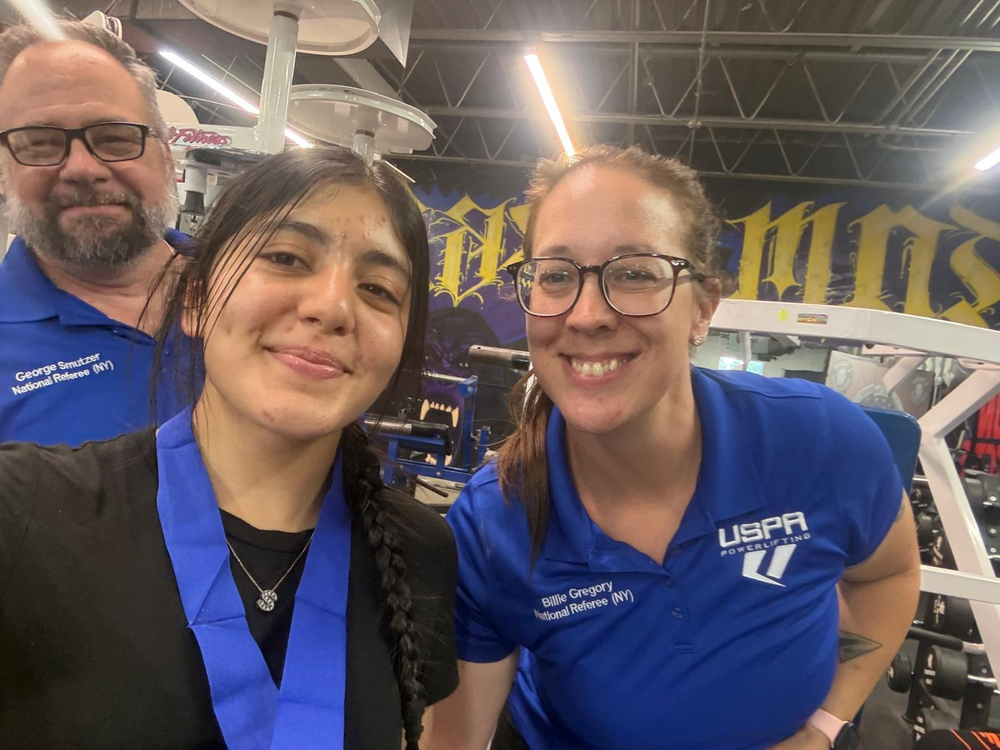
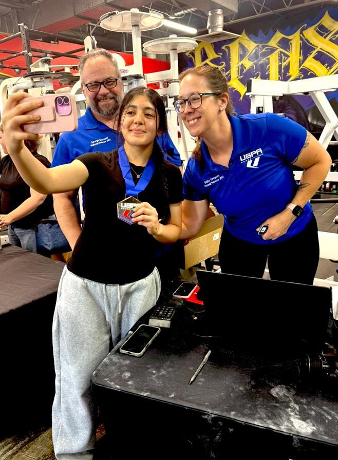
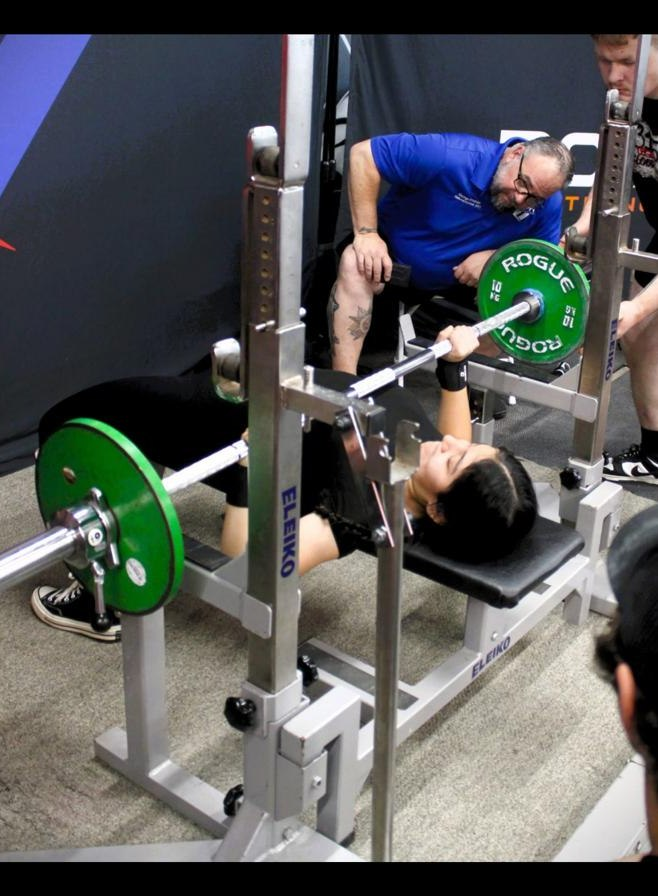
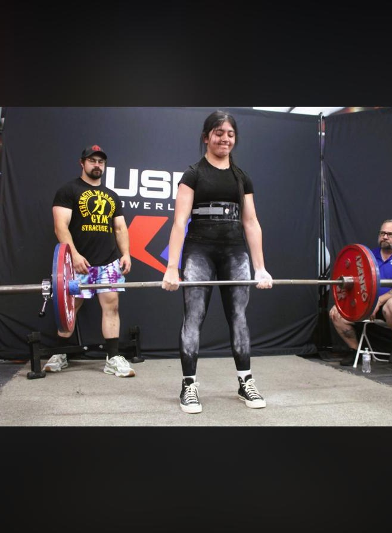
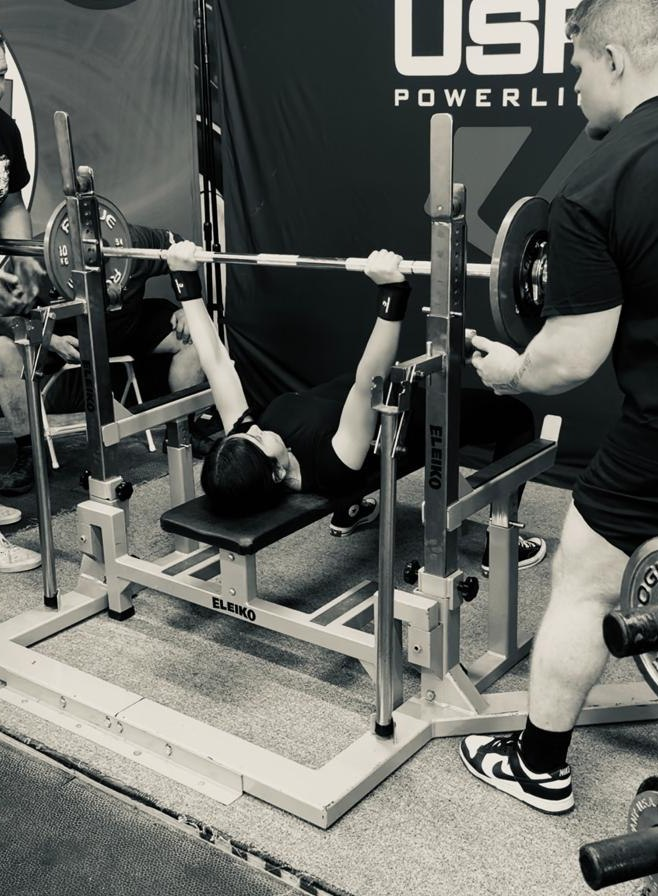
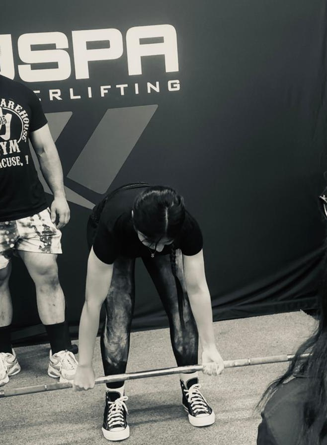
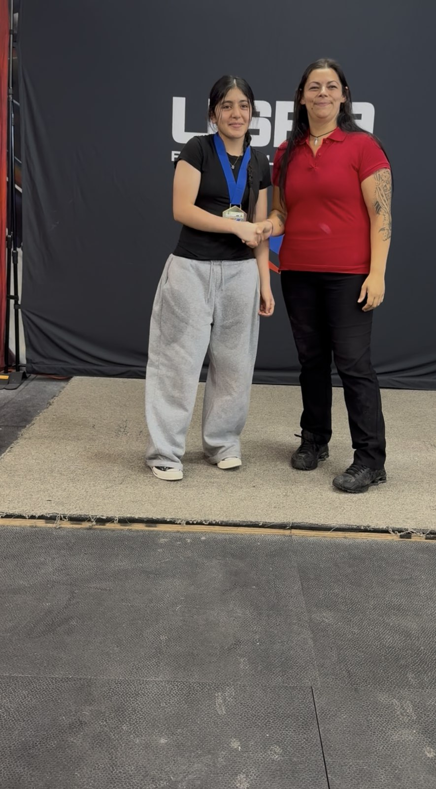

Best successful attempt
JUNIOR POWERLIFTER · STUDENT-ATHLETE · NEW YORK
Strength built with discipline.
Fatima tu Zahra is a high-achieving student-athlete building her competitive powerlifting record with focus, courage, consistency, and respect for the sport.
1stDivision place
267.5 kgMeet total
125 kgBest deadlift
298.111DOTS score

ATHLETE PROFILE
A promising first chapter
Fatima competes in raw powerlifting while balancing a demanding academic schedule, athletics, and community involvement. Her first documented USPA result reflects her willingness to train consistently, perform under pressure, and keep improving from one attempt to the next.
This profile is maintained by her family to create an accurate, professional record of verified competition results, academic milestones, community contributions, and future achievements.
SportRaw Powerlifting
DivisionJunior 60 kg · Ages 13–15
HomeNew York, USA
Student statusGrade 11 Honors Student
Academic standing4.0 GPA
Expected graduationJune 2028
VERIFIED COMPETITION RECORD
USPA Tested 315 Legacy Bloodline
August 23, 2026 · Syracuse, New York · Women Raw Powerlifting · Junior 60 kg, ages 13–15
Best successful attempt
Best successful attempt
1st place in listed division
Official result: First place in her division, with a 267.5 kg total at 59.5 kg body weight and a 298.111 DOTS score.
ACADEMICS & COMMUNITY
More than an athlete
Academic excellence
Grade 11 honors student with a 4.0 GPA, committed to maintaining strong academic performance alongside athletic training and competition.
School involvement
Participates in school athletics, including track and field, while continuing to build experience through clubs and extracurricular activities.
Community service
Has contributed to community food distribution, food pantry activities, blood-drive support, fundraising, and other volunteer efforts.
Future interests
Interested in law, government, leadership, public service, and continuing to develop as a disciplined student-athlete.
COMPETITION MEDIA
USPA competition gallery
Photos from Fatima’s first documented USPA competition appearance and first-place result.






COMPETITION VIDEO
Ready for the original meet video
Place the existing Fatima USPA.mp4 file in assets/video/ and use the included instructions to activate it on the page.
LOOKING AHEAD
Training for the next level
- 01Technical development
Continue developing safe, technically sound lifts with qualified coaching and consistent training.
- 02Competitive progression
Build a documented record of sanctioned competitions and pursue opportunities at progressively higher levels.
- 03Academic excellence
Maintain strong academic performance while balancing training, school athletics, leadership, and service.
- 04Long-term leadership
Continue exploring law, government, leadership, and public-service opportunities while developing as an athlete and student.